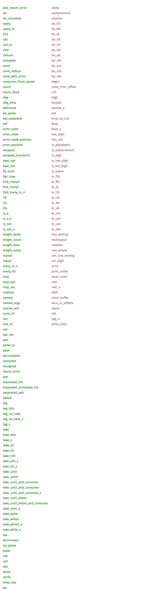

## Parsing in Rust with `nom`
#### Michael Layzell
## What is a parser?
note: What is a parser?
## Rust has a parser!
```rust
"10".parse::<i32>() // Ok(10)
"32.5".parse::<f64>() // Ok(32.5)
"cheese".parse::<i32>() // Err(ParseIntError { ... })
```
What does that look like?
note: Well, rust has a parser. There's a parse method on `str` which
you can call to interpret it as one of the primitive data types, like
i32 or f64.
Let's use that as a starting place.
Somewhere deep in the standard library...
```rust
impl str {
fn parse<F>(&self) -> Result<F, F::Err>
where F: FromStr { ... }
}
```
note: This is what that parse method looks like. The basic idea here
is that the function can take a string in as an argument, and produces
either structured data, or a result.
```rust
fn parse(&str) -> Result<Thing, Err> { ... }
```
> "A parser takes a string, and either returns the parsed value, or an
error"
note: If we simplify this down to the minimal definition, this is what
it looks like.
This is a relatively limited parser, however. It cannot handle
interesting cases, such as parsing data off of the beginning of a
string, and returning the remaining data.
## Incremental Parsing?!?
#### Key-value pairs
`key: 10`
#### Delimited lists
"apple, cider", "pear"
note: This is important for most interesting parser problems. For
example, if you have a parser for a word, and a parser for a number,
you would want to be able to combine them to get a key-value parser.
It would really suck if you had to write a brand new parser from
scratch for every combination of numbers, and strings.
In many of these cases we can't do the easy thing and split on a
delimiter character either, such as when you want to parse a
comma-separated list of strings, which might contain commas.
## Ta Da!
```rust
fn parse(&str) -> Result<(&str, Thing), Err> { ... }
```
> "A parser takes a string, and either returns the parsed value, and the rest of the string, or an error"
note: So, we can expand upon the basic parser, and bring it new power!
## Results in `nom`
```rust
enum IResult<I, R> { // * Not actually IResult
Done(I, R),
Error,
Incomplete,
}
```
note: But nom does something a little bit different. It was designed
to be as flexible and useful in as many situations as possible, so it
extracted one of the possible "error" states into a new Result
variant.
nom uses `IResult` which is like result, except that it also has
support for an `Incomplete` case. This is because nom was designed to
support parsing potentially-incomplete data streams, and needs a way
to distinguish between a parsing failure due to incorrectly formatted
data, versus a parsing failure due to simply not having received
enough data from the stream yet.
The actual definition of IResult is a bit longer, because nom likes to
be super fancy, but we can ignore it.
## Example Time!
#### Use the integer32 playground!
[https://play.integer32.com](https://play.integer32.com)
#### Or start your own project!
```bash
$ cargo new --bin nomnomnom
$ cd nomnomnom
$ echo 'nom = "3.0"' >> Cargo.toml
$ cargo run
```

## Get the `nom` docs!
```bash
$ cargo doc --open
```
[https://docs.rs/nom/3.0.0/](https://docs.rs/nom/3.0.0/)
## Do some fun exercises!
[https://github.com/jdm/nom-workshop-exercises](https://github.com/jdm/nom-workshop-exercises)
##### (These slides are also online)
[https://mystor.github.io/rust_meetup_20170530](https://mystor.github.io/rust_meetup_20170530)
note: So go get the docs! If you set up a local project, you can
easily get to them with `cargo doc --open`, or if you've been
following along in the playground, they're also avaliable on docs.rs.